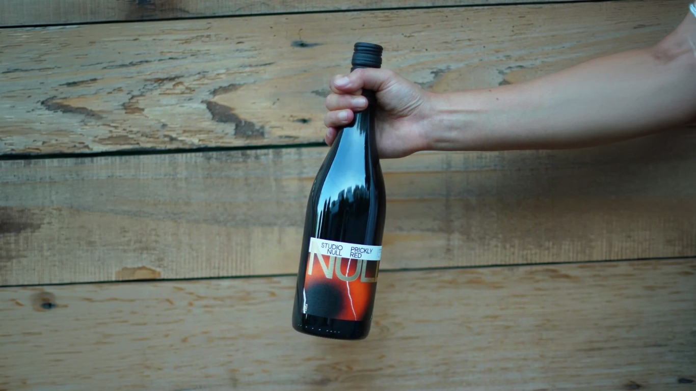

Ecommerce · UX, accessibility & purchase journey
Null Wines
UX and accessibility work across Null Wines’ landing experience, search, product discovery and purchase journey.

Overview
The work spanned Null Wines’ overall landing experience — accessibility, user journey, search, category and product sections, and the purchase journey itself. The goal was to make the site easier to use end to end, not just at the point of checkout.
Approach
Landing experience
Reworked the overall landing structure and how it introduces the catalogue.
Accessibility
Made key pages and interactions more accessible across the landing, search and filters, and purchase journey.
Search & filters
Adapted filtering to match how users actually search for wine.
Purchase journey
Worked through category, product and checkout sections as one connected path.
Impact
- 32% → 19% purchase drop-off
Cart abandonment fell from 32% to 19% over a 3-month period.
- 9% → 14% checkout conversion
Checkout page conversion rose from 9% to 14% over the same 3-month period.
- +6% entries
6% more entries on special campaign landing pages.
- Better discovery
Search and filters adapted to how users actually search for wine, so shoppers can find the right bottle more easily.